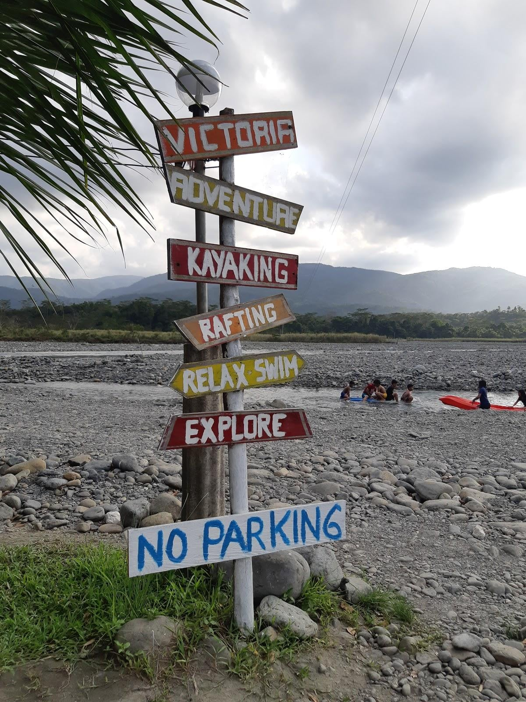
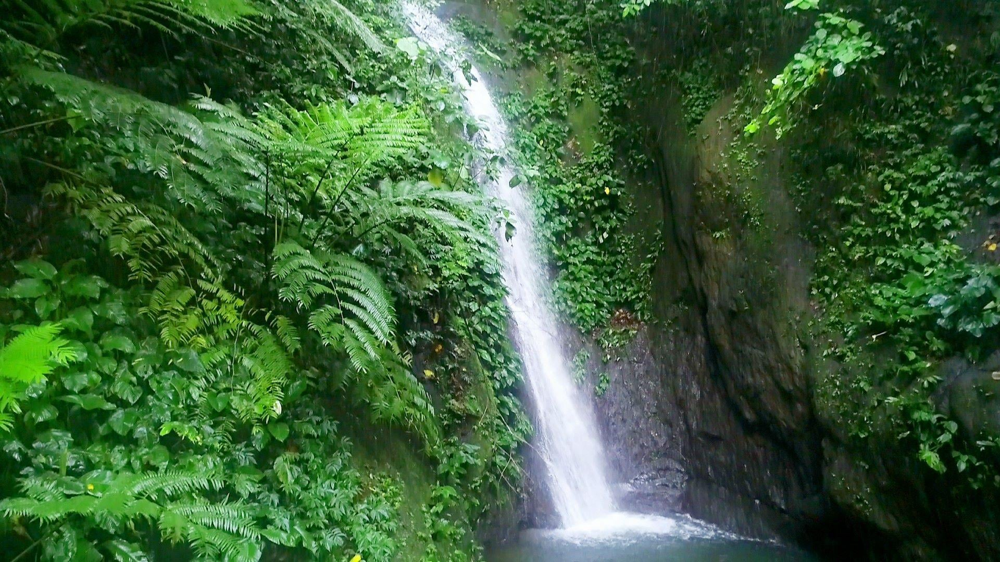
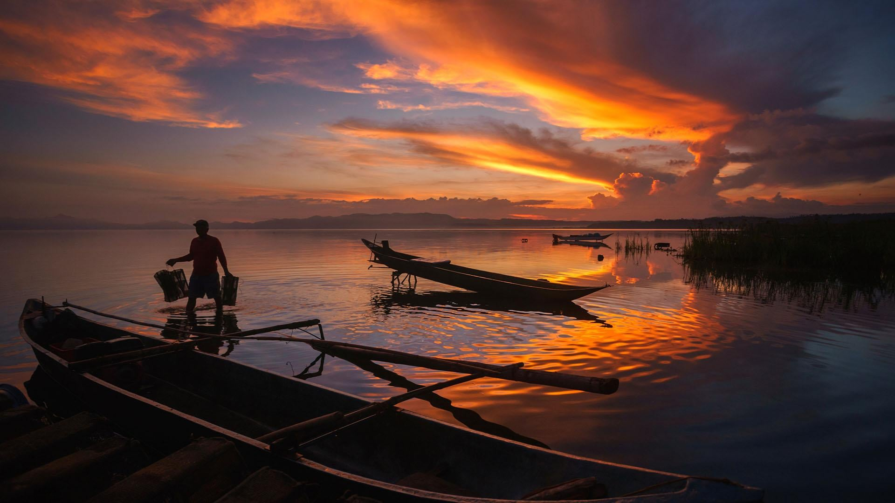
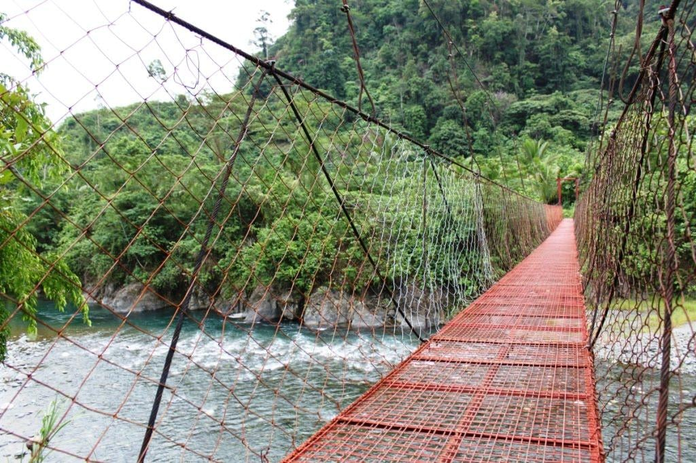
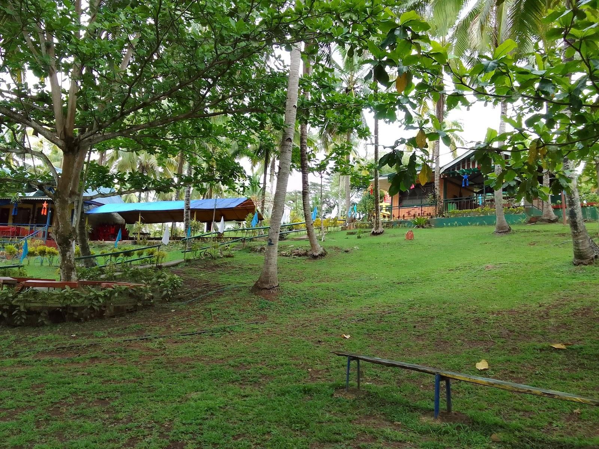

A Place Where You Belong
It expresses the idea that Victoria is more than just a destination; it is a place where people can feel welcomed, connected to nature, and part of a community.
Victoria Tourist Spots
Explore the breathtaking natural beauty and community attractions of Victoria.

Bato Creek
1. Bato Creek – Kayaking and White Water Rafting Location: Barangay Villa Cerveza, Victoria, Oriental Mindoro Type: Waterfall and spring / Water adventure Description: Bato Creek is a natural freshwater destination known for its flowing river, refreshing water, and green surroundings. It offers visitors an opportunity to appreciate the natural environment while enjoying outdoor activities. The destination is particularly known for kayaking and white-water rafting. Its riverbanks are lined with trees, creating a relaxing atmosphere for visitors.

Mabalbay Falls
2. Mabalbay Falls Location: Barangay Villa Cerveza, Victoria, Oriental Mindoro Type: Waterfall and spring Description: Mabalbay Falls is a natural waterfall considered one of the nature-based attractions of Victoria. It is surrounded by greenery and offers a peaceful environment away from the busy areas of the municipality. Getting to the waterfall involves approximately 40 minutes of trekking and crossing streams, according to the 2025 provincial statistical publication. The journey itself gives visitors an opportunity to appreciate the natural landscape of the area.

Naujan Lake
3. Naujan Lake – Malabo Area Location: Malabo area, Victoria, Oriental Mindoro Type: Lake and protected natural area Description: Naujan Lake is one of the largest freshwater lakes in the Philippines. It is an important natural resource that supports biodiversity and the livelihoods of nearby communities. The lake is surrounded by wetlands and vegetation that provide habitats for different species of birds, fish, and other wildlife. It is part of Naujan Lake National Park, a protected area that extends across several municipalities, including Victoria.

Aglubang River
4. Aglubang River Location: Victoria, Oriental Mindoro Type: River and natural resource Description: Aglubang River is another river identified in the municipality's provincial records. It contributes to the natural landscape and freshwater resources of the area.

Gipit Picnic Grove
5. Gipit Picnic Grove Location: Victoria, Oriental Mindoro Type: Picnic and recreational destination Description: Gipit Picnic Grove is an older recorded recreational destination in Victoria. It is associated with outdoor leisure and nature appreciation.